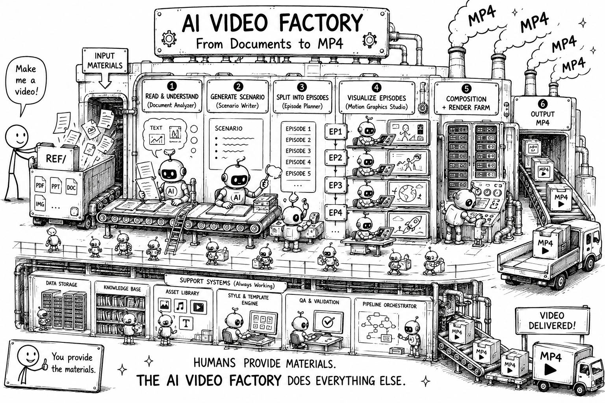

oh-my-vedioagent자료를 모션 그래픽 영상으로
영상 편집기 대신 코드와 AI 에이전트로 설명 영상을 만든다. Remotion 스튜디오를 띄우고, 장면을 구성하고, MP4로 렌더링하는 전 과정을 직접 돌려본다.
이 실습으로 얻는 것
이 트랙의 본질은 영상 편집이 아니다. 머릿속 시각·모션을 말로 풀어내면, 에이전트가 그것을 실제 영상으로 외재화한다 — 그 감각을 직접 익히는 것이다.
- “화살표가 왼쪽에서 들어오고 숫자가 카운트업된다” 같은 시각 표현을 언어로 묘사하는 법
- 그 언어 묘사를 에이전트가 모션 그래픽으로 외재화하는 과정 — 직접 그리지 않고 말로 지시한다
- 자료 → 개념 → 말로 된 장면 묘사 → 코드 영상으로 이어지는 흐름
- 타임라인을 끌지 않고, 프롬프트로 만든 장면을 MP4로 렌더링
설치 가이드
Windows 10/11 기준. 아래는 PowerShell에서 실행한다 — 프롬프트가 PS C:\>로 시작하면 PowerShell이다. 관리자 권한은 필요 없다.
1. Node.js 18+ (LTS) — 필수
Remotion 스튜디오와 렌더링이 Node 위에서 돈다. 렌더링에 GPU는 필요 없다.
winget install --id OpenJS.NodeJS.LTS -e터미널을 새로 열고 확인한다.
node -v
npm -v2. Claude Code — 필수
공식 네이티브 설치 스크립트를 실행한다. 이후 자동 업데이트된다.
irm https://claude.ai/install.ps1 | iexclaude --version계정. Claude Code는 Pro·Max·Team·Enterprise 또는 Console(API) 계정이 필요하다 — 무료 플랜으로는 쓸 수 없다.
3. Git for Windows (권장)
레포 복제에 필요하고, 있으면 Claude Code가 Bash 도구를 쓸 수 있다(없으면 PowerShell로 대체).
winget install --id Git.Git -egit --version막히면. 설치 중 어디서든 막히면 Claude(claude.ai)를 열고 물어본다. 터미널에 뜬 에러 메시지를 그대로 복사해 붙여넣으면 된다.
1단계 — 템플릿으로 내 레포 만들고 실행
- GitHub에서 oh-my-vedioagent를 연다.
- “Use this template” → “Create a new repository”로 내 레포를 만든다.
- 복제 후 의존성을 설치하고 스튜디오를 띄운다.
git clone https://github.com/<you>/<your-repo>.git
cd <your-repo>
npm i
npm run dev브라우저에서 http://localhost:3000으로 Remotion 스튜디오가 열린다. 왼쪽 사이드바에는 src/Root.tsx에 등록된 컴포지션이 보이고, 완성 예제는 tiny-vllm > Ep1-Prefill 아래에 있다. 먼저 이 예제를 재생해 “코드가 곧 영상”이라는 감각을 잡는다.
2단계 — 에이전트에게 영상을 시킨다
예제를 봤으면 내 자료로 같은 과정을 돌린다. 사람이 장면을 그리지 않는다 — 자료를 주고, 에이전트에게 단계별로 시킨다. 템플릿의 tiny-vllm이 바로 이 과정을 거쳐 나온 결과물이다.
- 자료를 넣는다. 영상으로 만들 원본을
ref/에 넣는다. - 시나리오를 짜게 한다. 에이전트에게 자료를 읽고 시나리오를 작성하라고 시킨다.
- 에피소드로 구성하게 한다. 시나리오를 영상 에피소드 단위로 나누게 한다.
- 에피소드마다 시각화하게 한다. 각 에피소드를 모션 그래픽 장면으로 만들게 한다 —
tiny-vllm의Ep1-Prefill이 그 한 편이다.
장면이 나오면 컴포지션 ID와 출력 경로를 지정해 MP4로 렌더링한다.
npx remotion render Ep1-Prefill out/ep1-prefill.mp4